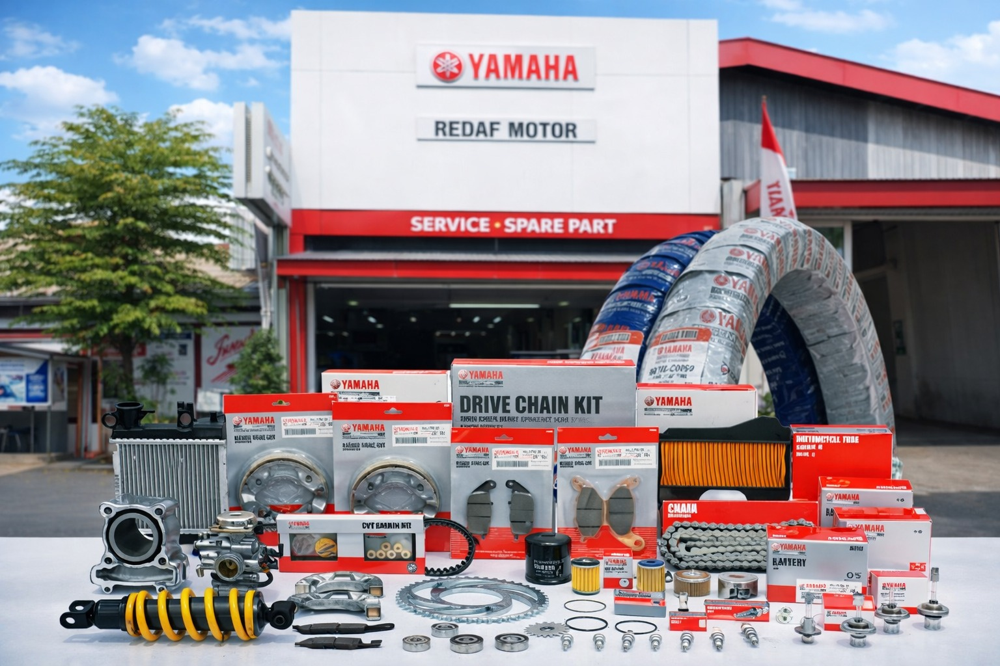
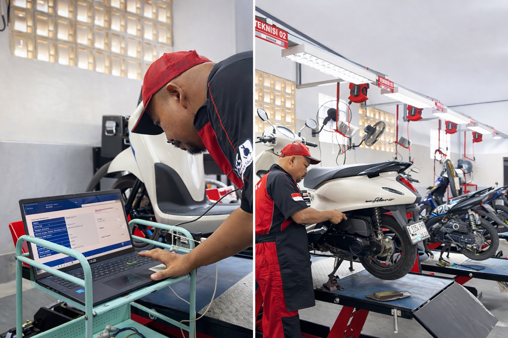

Layanan Bengkel Kami

Servis Berkala & KSG
Menerima Kupon Servis Gratis (KSG 1-4) dan perawatan berkala terstandar Yamaha dengan diagnostic tool presisi.pppppppppppppppppppppppppppppppppppppppppppppppppppppppppppppppppppppppppppppppppppppppppppppppppppppppppppppppppppppppppppppppppppppppppppppppppppppppppppppppppppppppppppppppppppppppppppppppppppppppppppppppppppppppppppppppppppppppppppppppppppppppppppppppppppppppppppppppppppppppppppppppppppppppppppppppppppppppppppppppppppppppppppppppppppppppppppppppppppppppppppppppppppppppppppppppppppppppppppppppppppppppppppppppppppppppp

Yamalube & Sparepart Asli
100% jaminan keaslian oli Yamalube dan Yamaha Genuine Parts resmi pabrikan untuk menjaga performa mesin tetap prima.

Fast Pit Service
Layanan servis kilat 10-15 menit bebas antri untuk ganti oli, ban, busi, aki, kampas rem, dan komponen habis pakai lainnya.

SKY (Service Kunjung)
Teknisi profesional siap datang langsung ke rumah, kantor, atau lokasi mogok motor Anda dengan peralatan lengkap.

Overhaul & Turun Mesin
Penanganan restorasi mesin total dan rekondisi performa mesin berat bergaransi resmi dari teknisi handal bersertifikat.

YDT Diagnostic & Injeksi
Pengecekan sistem sensor injeksi, ECU, dan kelistrikan motor secara akurat menggunakan komputer Yamaha Diagnostic Tools.
Our Facilities
Ruang Tunggu Nyaman AC
Area santai ber-AC dengan sofa empuk sehingga Anda dapat menunggu servis dengan nyaman dan rileks.
Free Wi-Fi & Charging
Koneksi internet nirkabel berkecepatan tinggi dan stopkontak untuk mengisi daya gadget Anda.
Snack & Minuman Gratis
Tersedia pilihan kopi, teh hangat, air mineral, serta makanan ringan gratis selama waktu tunggu.
TV & Area Hiburan
Layar TV tayangan hiburan interaktif agar pengalaman menunggu Anda menjadi lebih menyenangkan.
Transparan View Pit
Dinding kaca bening yang memungkinkan Anda melihat langsung proses pengerjaan motor oleh teknisi.
Musholla Bersih
Fasilitas tempat ibadah yang nyaman, tenang, dan bersih lengkap dengan perlengkapan sholat.
Toilet Higienis
Toilet pelanggan yang terawat, wangi, dan selalu dibersihkan secara berkala demi kenyamanan Anda.
Parkir Luas & Aman
Area parkir kendaraan roda dua dan empat yang luas dilengkapi pengawasan keamanan kamera CCTV.